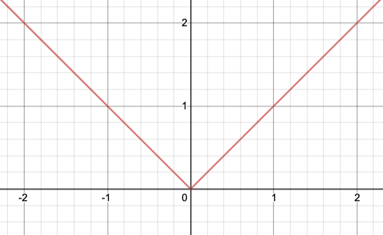
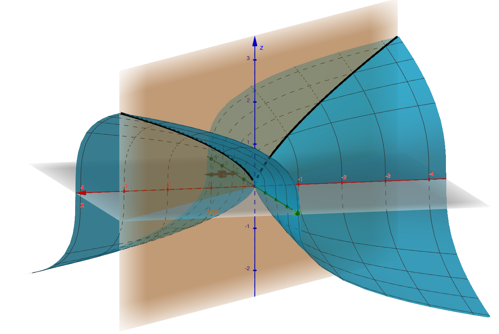
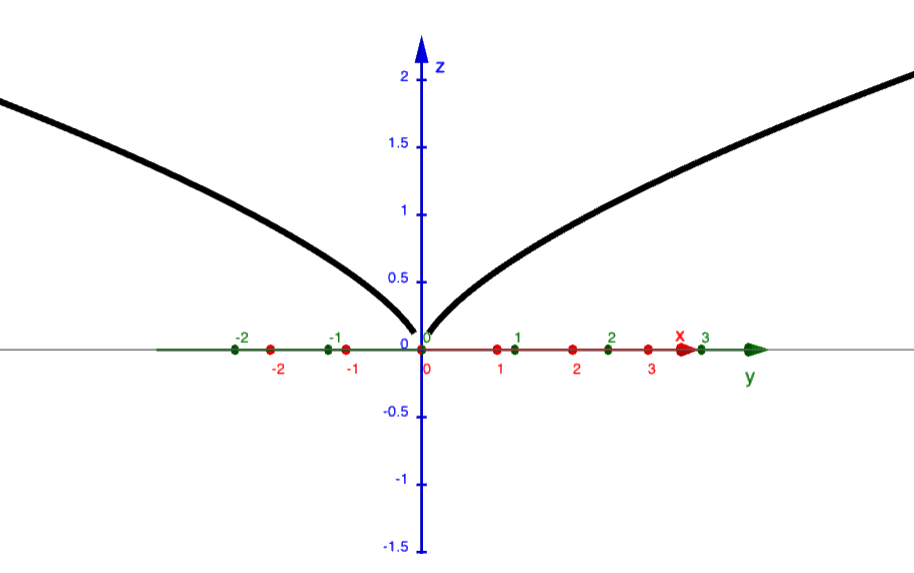

Section 4.2 Les plans tangents et les approximations linéaires
¶Outils 4.2.1.
Calculatrice à équations de plans tangents au graphe d'une fonction de deux variables :
Application GeoGebra illustrant graphiquement le concept de plan tangent au graphe d'une fonction de deux variables.
Exemple de calcul d'équation de plan tangent avec WolframAlpha.
Objectifs
Connaître la condition suffisante de différentiabilité en un point pour une fonction de plusieurs variables.
Savoir utiliser les dérivées partielles d'une fonction de deux variables pour déterminer l'équation du plan tangent à son graphe en un point.
Savoir déterminer la linéarisation et la différentielle d'une fonction de plusieurs variables.
Savoir donner une approximation de la valeur d'une fonction en la linéarisant.
Savoir utiliser la différentielle pour estimer rapidement des variations.
Exercice 4.2.1.
Le but de cet exercice est de réviser les concepts de tangence, d'approximation linéaire et de différentielle dans le cas des fonctions d'une variable.
On s'intéresse à la fonction
-
Donnez l'équation de la tangente au graphe de \(f\) au point \((4,f(4))=(4,2)\) sous la forme
\begin{equation*} y=ax+b \end{equation*}en déterminant la pente \(a\text{,}\) puis l'ordonnée à l'origine \(b\text{.}\)
Déterminez la linéarisation \(L(x)\) de la fonction \(f(x)\) en \(x_0=4\) (c'est-à-dire son polynôme de Taylor de degré au plus \(1\) centré en \(x_0=4\)).
-
Vérifiez que
\begin{equation*} y=L(x) \end{equation*}fournit une nouvelle équation de la tangente, équivalente à celle trouvée en 1.
Si \(y=f(x)\text{,}\) déterminez la différentielle \(\mathrm{d}y\text{.}\)
Utilisez la linéarisation \(L(x)\) pour obtenir une approximation de \(\sqrt{4{,}1}\) sans calculatrice. Comparez avec la valeur exacte.
Si \(y=f(x)\text{,}\) comparez les valeurs de \(\Delta y\) et de \(\mathrm{d}y\) lorsque \(x\) varie de \(4\) à \(4{,}1\text{.}\)
Voici la synthèse graphique des concepts évoqués dans cet exercice :
-
On obtient
\begin{equation*} y=\frac{1}{4}x+1. \end{equation*} -
On trouve
\begin{equation*} L(x)=2+\frac{1}{4}(x-4). \end{equation*} -
En effet, on a
\begin{align*} y=L(x)&\quad\Leftrightarrow\quad y=2+\frac{1}{4}(x-4)\\ &\quad\Leftrightarrow\quad y=2+\frac{1}{4}x-1\\ &\quad\Leftrightarrow\quad y=\frac{1}{4}x+1. \end{align*} -
On a
\begin{equation*} \mathrm{d}y=\frac{1}{2\sqrt{x}}\,\mathrm{d}x. \end{equation*} -
Comme \(f\) est dérivable en \(x_0=4\text{,}\) cela a du sens d'approcher
\begin{equation*} f(4{,}1)=\sqrt{4{,}1} \end{equation*}par
\begin{equation*} L(4{,}1)=2{,}025. \end{equation*}À l'aide d'une calculatrice, on obtient la valeur exacte
\begin{equation*} f(4{,}1)=\sqrt{4{,}1}=2{,}024\,845\ldots. \end{equation*}Donc l'erreur commise en approchant \(f(4{,}1)\) par \(L(4{,}1)\) vaut
\begin{equation*} f(4{,}1)-L(4{,}1)\approx -0{,}000\,2. \end{equation*} -
On trouve
\begin{equation*} \Delta y=0{,}024\,845\ldots \end{equation*}et
\begin{equation*} \mathrm{d}y=0{,}025 \end{equation*}qui fournit une bonne estimation de \(\Delta y\) sans avoir recours à la calculatrice.
-
D'abord, on calcule la pente de la tangente à l'aide de la dérivée
\begin{equation*} f'(x)=\frac{1}{2\sqrt{x}}. \end{equation*}On trouve
\begin{align*} a&=f'(4)\\ &=\frac{1}{2\sqrt{4}}\\ &=\frac{1}{4}. \end{align*}Ensuite, on remplace \((x,y)\) par \((4,f(4))=(4,2)\) dans l'équation
\begin{equation*} y=\frac{1}{4}x+b. \end{equation*}On trouve
\begin{equation*} 2=\frac{1}{\cancel{4}}\cancel{4}+b \end{equation*}d'où
\begin{equation*} b=2-1=1. \end{equation*}Finalement, on obtient l'équation suivante
\begin{equation*} y=\frac{1}{4}x+1 \end{equation*}pour la tangente au graphe de \(f\) au point \((4,f(4))=(4,2)\text{.}\)
-
Par définition, on a
\begin{align*} L(x)&=f(4)+f'(4)(x-4)\\ &=2+\frac{1}{4}(x-4). \end{align*} -
En effet, on a
\begin{align*} y=L(x)&\quad\Leftrightarrow\quad y=2+\frac{1}{4}(x-4)\\ &\quad\Leftrightarrow\quad y=2+\frac{1}{4}x-1\\ &\quad\Leftrightarrow\quad y=\frac{1}{4}x+1. \end{align*} -
Si \(y=f(x)\text{,}\) on a
\begin{align*} \mathrm{d}y&=f'(x)\,\mathrm{d}x\\ &=\frac{1}{2\sqrt{x}}\,\mathrm{d}x \end{align*}par définition.
-
Comme \(f\) est dérivable en \(x_0=4\text{,}\) cela a du sens d'approcher
\begin{equation*} f(4{,}1)=\sqrt{4{,}1} \end{equation*}par
\begin{align*} L(4{,}1)&=2+\frac{1}{4}(x-4)\Bigg\rvert_{x=4{,}1}\\ &=2+\frac{1}{4}(4{,}1-4)\\ &=2+\frac{0{,}1}{4}\cdot \\ &=2+0{,}025\\ &=2{,}025. \end{align*}À l'aide d'une calculatrice, on obtient la valeur exacte
\begin{equation*} f(4{,}1)=\sqrt{4{,}1}=2{,}024\,845\ldots. \end{equation*}Donc l'erreur commise en approchant \(f(4{,}1)\) par \(L(4{,}1)\) vaut
\begin{align*} f(4{,}1)-L(4{,}1)&=2{,}024\,845\ldots-2{,}025\\ &=-0{,}000\,15\ldots\\ &\approx -0{,}000\,2. \end{align*} -
D'une part, la variation exacte de \(y=f(x)\) vaut
\begin{align*} \Delta y&=f(4{,}1)-f(4)\\ &=\sqrt{4{,}1}-\sqrt{4}\\ &=2{,}024\,845\ldots-2\\ &=0{,}024\,845\ldots \end{align*}D'autre part, la différentielle donne
\begin{align*} \mathrm{d}y&=f'(4)\,\Delta x\\ &=\frac{1}{4}(4{,}1-4)\\ &=\frac{1}{4}\cdot 0{,}1\\ &=0{,}025 \end{align*}qui fournit une bonne estimation de \(\Delta y\) sans avoir recours à la calculatrice.
Exercice 4.2.2.
-
Pour une fonction d'une variable \(f(x)\text{,}\) l'existence de
\begin{equation*} f'(x_0) \end{equation*}est nécessaire et suffisante pour pouvoir parler de droite tangente au graphe de \(f\) au point \((x_0,f(x_0))\text{.}\)
Autrement dit, le graphe de \(f\) admet une droite tangente au point \((x_0,f(x_0))\) si et seulement si \(f\) est dérivable en \(x_0\text{.}\)
Quand c'est le cas, cela se traduit visuellement par le fait que plus on zoome sur le point \((x_0,f(x_0))\text{,}\) plus le graphe ressemble à cette droite dont l'équation peut s'écrire
\begin{equation*} y=f(x_0)+f'(x_0)(x-x_0). \end{equation*} -
Pour une fonction de deux variables \(g(x,y)\text{,}\) l'existence de
\begin{equation*} f_x(x_0,y_0)\quad\text{et}\quad f_y(x_0,y_0) \end{equation*}est nécessaire, mais pas suffisante, pour pouvoir parler de plan tangent au graphe de \(g\) au point \((x_0,y_0,f(x_0,y_0))\text{.}\)
En fait, le graphe de \(g\) admet un plan tangent au point \((x_0,y_0,f(x_0,y_0))\) si et seulement si \(g\) est différentiable en \((x_0,y_0)\text{.}\) Ce concept est délicat à définir, alors nous sous contenterons de la condition suffisante de différentiabilité en un point suivante : si \(g_x\) et \(g_y\) existent au voisinage de \((x_0,y_0)\) et qu'elles sont continues en ce point, alors \(g\) est différentiable en ce point et cela a un sens de parler de plan tangent et d'approximation linéaire.
Quand c'est le cas, cela se traduit visuellement par le fait que plus on zoome sur le point \((x_0,y_0,g(x_0,y_0))\text{,}\) plus le graphe ressemble à ce plan dont l'équation peut s'écrire
\begin{equation*} z=g(x_0,y_0)+g_x(x_0,y_0)(x-x_0)+g_y(x_0,y_0)(y-y_0). \end{equation*}
Donnez un exemple graphique de fonction d'une variable \(f(x)\) dont le graphe n'admet pas de droite tangente au point \((0,f(0))\text{.}\)
Donnez un exemple graphique de fonction de deux variables \(g(x,y)\) dont le graphe n'admet pas de plan tangent au point \((0,0,g(0,0))\) même si les dérivées partielles \(g_x(0,0)\) et \(g_y(0,0)\) existent.
Connaissez-vous une fonction dont le graphe présente un point anguleux en \((0,0)\text{?}\)
Jouez avec votre logiciel favori pour trouver par exemple une fonction dont les traces dans les plans d'équations \(x=0\) et \(y=0\) donnent des droites, mais dont la trace dans le plan d'équation \(x=y\) donne une courbe présentant un point de rebroussement à l'origine.
-
La fonction valeur absolue
\begin{equation*} f(x)=|x| \end{equation*}fournit un tel exemple :
 -
La fonction
\begin{equation*} g(x,y)=\sqrt[3]{xy} \end{equation*}fournit un tel exemple :

-
Comme la fonction valeur absolue
\begin{equation*} f(x)=|x| \end{equation*}n'est pas dérivable en \(x=0\text{,}\) son graphe
n'admet pas de tangente au point \((0,f(0))\text{.}\) -
Considérons la fonction
\begin{equation*} g(x,y)=\sqrt[3]{xy}. \end{equation*}Comme
\begin{equation*} g(x,0)=\sqrt[3]{x\cdot0}=\sqrt[3]{0}=0\quad\text{pout tout }x\in\mathbb{R}, \end{equation*}on a
\begin{align*} g_x(0,0)&=\lim_{x\rightarrow 0}\frac{g(x,0)-g(0,0)}{x-0}\\ &=\lim_{x\rightarrow 0}\frac{0-0}{x}\\ &=\lim_{x\rightarrow 0}0\\ &=0. \end{align*}De même, la dérivée partielle \(g_y(0,0)\) existe et vaut
\begin{equation*} g_y(0,0)=0. \end{equation*}Mais quand on prend la trace du graphe de \(g\)
dans le plan d'équation\begin{equation*} x=y \end{equation*}on obtient une courbe
qui présente un point de rebroussement à l'origine.Par conséquent, on aura beau zoomer autant qu'on voudra sur le point \((0,0,g(0,0))\text{,}\) le graphe de \(g\) ne ressemblera jamais à aucun plan. Voici pourquoi, intuitivement, il n'y a pas de plan tangent en ce point.
Exercice 4.2.3.
Trouvez l'équation du plan tangent à la surface d'équation
au point
Vérifiez graphiquement votre réponse à l'aide de votre logiciel préféré.
Si \(f\) est différentiable au point \((x_0,y_0)\text{,}\) la surface d'équation
admet un plan tangent au point
et l'équation de ce plan tangent peut s'écrire
On obtient l'équation
En représentant graphiquement ce plan,
Introduisons la fonction
dont le graphe correspond à la surface considérée.
L'évaluation de ses dérivées partielles
au point \((-1,3)\) donne
Au point \((-1,3,0)\text{,}\) l'équation du plan tangent au graphe de \(f\)
prend donc la forme
ou encore
Remarque : Comme les dérivées partielles \(f_x\) et \(f_y\) existent autour du point \((-1,3)\) qu'elles y sont continues, la fonction \(f\) est différentiable en ce point et cela a un bien un sens de parler de plan tangent.
Exercice 4.2.4.
Utilisez la linéarisation de la fonction
au point \((-1,3)\) pour obtenir une approximation de
sans calculatrice.
Calculez ensuite l'erreur commise et arrondissez-la à trois décimales.
Linéariser une fonction de deux variables en un point, c'est remplacer son graphe par le plan qui lui est tangent en ce point.
Concrètement, la linéarisation de \(f(x,y)\) au point \((x_0,y_0)\) est la fonction
On trouve
et
Les calculs faits à l'exercice précédent 4.2.3 donnent la linéarisation
qui fournit l'approximation de \(f(-1{,}2;3{,}3)\) suivante
sans nécessiter de calculatrice.
En calculant la valeur exacte
à l'aide d'une calculatrice, on voit que l'erreur commise vaut
Exercice 4.2.5.
On s'intéresse aux variables \(x,y,z\) liées comme suit :
Calculez la différentielle \(\mathrm{d}z\text{.}\)
-
Comparez les valeurs de
\begin{equation*} \mathrm{d}z\quad\text{et}\quad\Delta z \end{equation*}lorsque \((x,y)\) varie
\begin{equation*} \text{de}\quad(1,2)\quad\text{à}\quad(1{,}05;2{,}10). \end{equation*}
Si \(z=f(x,y)\) alors la différentielle \(\mathrm{d}z\) est définie par
\(\mathrm{d}z=(2x-y)\mathrm{d}x+(6y-x)\mathrm{d}y\text{.}\)
\(\mathrm{d}z=1{,}1\) et \(\Delta z=1{,}127\,5\text{.}\)
Notons \(f(x,y)=x^2-xy+3y^2\) et calculons
-
Par définition, on a alors
\begin{align*} \mathrm{d}z&=\frac{\partial f}{\partial x}\mathrm{d}x+\frac{\partial f}{\partial y}\mathrm{d}y\\ &=(2x-y)\mathrm{d}x+(6y-x)\mathrm{d}y. \end{align*} -
Lorsque \((x,y)\) varie de \((1,2)\) à \((1{,}05;2{,}10)\text{,}\) on part de
\begin{equation*} x=1\quad\text{et}\quad y=2 \end{equation*}puis on ajoute
\begin{equation*} \Delta x=1{,}05-1=0{,}05\quad\text{et}\quad\Delta y=2{,}10-2=0{,}10. \end{equation*}Alors \(\mathrm{d}z\) prend la valeur
\begin{align*} \mathrm{d}z&=(2x-y)\Delta x+(6y-x)\Delta y\\ &=(2\cdot 1-2)\cdot 0{,}05+(6\cdot 2-1)\cdot 0{,}10\\ &=0\cdot 0{,}05+11\cdot 0{,}1\\ &=1{,}1 \end{align*}qu'on peut évaluer rapidement sans calculatrice.
Par ailleurs, la différence exacte \(\Delta z\) entre les valeurs de \(z=f(x,y)\) s'obtient grâce au calcul
\begin{align*} \Delta z&=f(1{,}05;2{,}10)-f(1,2)\\ &=(\underbrace{1{,}05^2-1{,}05\cdot 2{,}10+3\cdot 2{,}10^2}_{=12{,}127\,5})-(\underbrace{1^2-1\cdot 2+3\cdot 2^2}_{=11})\\ &=1{,}127\,5 \end{align*}qu'on n'a pas vraiment envie de faire de tête.
Comme la valeur de \(\mathrm{d}z\) est proche de celle de \(\Delta z\text{,}\) il est tentant de s'en contenter pour obtenir un ordre de grandeur et sauver du temps.
Exercice 4.2.6.
On mesure les dimensions d'une boîte rectangulaire à l'aide d'un ruban à mesurer. On trouve une largeur de \(20\,\mathrm{cm}\text{,}\) une longueur de \(25\,\mathrm{cm}\text{,}\) et une hauteur de \(10\,\mathrm{cm}\text{.}\)
Sachant que le ruban à mesurer est précis à \(\pm 0{,}2\,\mathrm{cm}\text{,}\) utilisez la différentielle pour estimer l'erreur maximale commise sur le calcul du volume de la boîte.
Déduisez-en une estimation de l'erreur relative commise.
Notez \(x,y,z\) la largeur, la longueur et la hauteur, de sorte que le volume vaut
et que la précision du ruban se traduit par les inégalités
qui permettent de majorer la valeur de la différentielle
On estime l'erreur maximale à
et l'erreur relative maximale à
environ.
Suivons l'indication et notons \(x,y,z\) la largeur, la longueur et la hauteur, de sorte que le volume vaut
et que la précision du ruban se traduit par les inégalités
Alors la différentielle
prend la valeur
Par inégalité triangulaire, on obtient la majoration
qui indique une erreur maximale de
environ.
Pour l'erreur relative correspondante
on en déduit l'estimation
qui indique une erreur relative maximale de
environ.
Synthèse 4.2.2.
Pour retenir toutes les formules de cette section, il peut être utile de les comparer à celles rencontrées en cours de calcul différentiel pour des fonctions d'une seule variable.
Soit \(f(x)\) une fonction d'une variable dérivable en \(x_0\) et \(g(x,y)\) une fonction de deux variables admettant des dérivées partielles \(\frac{\partial f}{\partial x}\) et \(\frac{\partial f}{\partial y}\) au point \((x_0,y_0)\text{.}\)
(a)
Rappeler les équations des graphes de \(f\) et de \(g\text{.}\)
Le graphe de \(f\) a pour équation
et celui de \(g\) a pour équation
(b)
Comparer la linéarisation de \(f\) en \(x_0\) et celle de \(g\) au point \((x_0,y_0)\text{.}\)
La linéarisation de \(f\) est
et celle de \(g\)
(c)
Comparer l'équation de la tangente au graphe de \(f\) au point \((x_0,f(x_0))\) et celle du plan tangent au graphe de \(g\) au point \((x_0,y_0,f(x_0,y_0))\text{.}\)
La tangente a pour équation
et le plan tangent
(d)
Comparer les différentielles \(\mathrm{d}f\) et \(\mathrm{d}g\text{.}\)
Avec une variable, on a
et avec deux variables,
Si vous souhaitez en faire plus ou disposer de plus d'exemples, vous pouvez consulter les exercices 2, 4, 12, 14, 26, 32, 38, 44 dont voici les solutions.
Sinon, passez directement aux exercices prioritaires de cette section.
Remarque : Voici le document distribué les sessions précédentes. Et en voilà le solutionnaire.